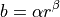
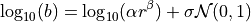
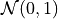
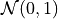
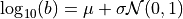
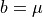

pydfnworks: dfnGen
DFN Class functions used in network generation and meshing
dfnGen
Adding Fracture Families
- add_fracture_family(self, shape, distribution, kappa, family_number=None, probability=None, p32=None, layer=0, region=0, number_of_points=8, aspect=1, beta_distribution=0, beta=0, theta=None, phi=None, strike=None, dip=None, trend=None, plunge=None, alpha=None, log_mean=None, log_std=None, exp_mean=None, constant=None, min_radius=None, max_radius=None, hy_variable=None, hy_function=None, hy_params=None)[source]
Generates a fracture family
- Parameters:
self (DFN object)
shape ('rect' or 'ell' deines the fracture family shape)
distribution ('tpl', 'log_normal', 'exp', or 'constant' defines the sample distribution for the fracture radius)
kappa (concentration param of the von Mises-Fisher distribution)
family_number (fracutre family id. default = None)
probability (probabily of a fracture belonging to this family. default = None. use if stopCondition = 0)
p32 (fracture intensity for the family. default = None. use if stopCondition = 1)
layer (assigns fracture family to a layer in the domain. default = 0)
region (assigns fracture family to a region in the domain. default = 0)
number_of_points (specifies the number of vertices defining th eboundary of each fracture. default = 8)
aspect (the aspect ratio of the fractures. default = 1)
beta_distribution (0 (uniform distribtuion [0,2pi) or 1 (constant rotation specfied by ebeta) rotation of each fractures normal vector. default 0)
beta (angle fo constant rotation. use if beta_distribution = 1. default = 0)
theta (use if orientationOption = 0 (default). default = None)
phi (use if orientationOption = 0 (default). default = None)
trend (use if orientationOption = 1. default = None)
plunge (use if orientationOption = 1. default = None)
dip (use if orientationOption = 2. default = None)
strike (use if orientationOption = 2. default = None)
alpha (parameter for 'tpl'. default = None)
log_mean (parameter for 'log_normal'. default = None)
log_std (parameter for 'log_normal'. default = None)
exp_mean (parameter for 'exp'. default = None)
constant (parameter for 'constant'. default = None)
min_radius (minimum fracture radius for 'tpl' 'log_normal' or 'exp'. default = None)
max_radius (maximum fracture radius for 'tpl' 'log_normal' or 'exp'. default = None)
hy_variable (hydraulic variable to assign values to. options are 'aperture', 'permeability', 'transmissivity',)
hy_function (relationship between hydraulic variable and fracture radius. options are 'correlated', 'semi-correlated', 'constant', 'log-normal')
hy_params (parameters for the hydraulic function. see next lines for syntax and options) – if ‘correlated’ –> {“alpha”:value, “beta:value} if ‘semi-correlated’ –> {“alpha”:value, “beta”:value, “sigma”:value} if ‘constant’ –> {“mu”:value} if ‘log-normal’ –> {“mu”:value, “sigma”:value}
- Return type:
Populated fracture family dictionary for specified family
Notes
See https://dfnworks.lanl.gov/dfngen.html#domain-parameters for more information about parameters
Example:
DFN.add_fracture_family(shape="ell",
distribution="tpl",
alpha=1.8,
min_radius=1.0,
max_radius=5.0,
kappa=1.0,
theta=0.0,
phi=0.0,
aspect=2,
beta_distribution=1,
beta=45.0,
p32=1.1,
hy_variable='aperture',
hy_function='correlated',
hy_params={
"alpha": 10**-5,
"beta": 0.5
})
Adding User Fractures
- add_user_fract(self, shape, radii, translation, filename=None, aspect_ratio=1, beta=0, angle_option='degree', orientation_option='normal', normal_vector=None, trend_plunge=None, dip_strike=None, number_of_vertices=None, permeability=None, transmissivity=None, aperture=None)[source]
Specifies user defined fracture parameters for the DFN.
- Parameters:
shape (string) – The desired shape of the fracture options are ‘rect’, ‘ell’, and ‘poly’ - Required
radii (float) – 1/2 size of the fracture in meters - Required
translation (list of floats [3]) – Fracture center
filename (string) – The name of the user defined fracture file. Default is user_defined_{shape}.dat
aspect_ratio (float) – Fracture aspect ratio
beta (float) – Rotation angle around center of the fracture
angle_option (string) – Angle option ‘degree’ or ‘radian’. Default is degree
orientation_option (string) – Choice of fracture orienation ‘normal’, ‘trend_plunge’, ‘dip_strike’
normal_vector (list [3]) – normal vector of the fracture
trend_plunge (list [2]) – trend and plunge of the fracture
dip_strike (list [2]) – dip and strike of the fracture
number_of_vertices (int) – Number of vertices on the fracture boundary.
permeability (float) – Permeability of the fracture
transmissivity (float) – Fracture Tramsmissivity
aperture (float) – Hydraulic aperture of the fracture
- Return type:
None - fracture dictionaries are attached to the DFN object
Notes
Please be aware, the user fracture files can only be automatically written for ellipses and rectangles not specified by coordinate.
See
https://dfnworks.lanl.gov/dfngen.html#user-defined-fracture-generation-parameters
for additional information
Example:
DFN.add_user_fract(shape='ell',
radii=.4,
aspect_ratio=1,
translation=[0.2, 0, 0.2],
normal_vector=[0, 0, 1],
number_of_vertices=8,
aperture=1.0e-5)
Adding User Fractures From a File
- add_user_fract_from_file(self, filename, shape, nPolygons, by_coord=False, aperture=None, transmissivity=None, permeability=None)[source]
Sets up paths for fractures defined in user input file. When inserting user fractures from file, hydraulic properties must be provided as a list of length nPolygons (number of fractures defined in the file)
- Parameters:
filename (string) – path to source file
shape (string) – The shape of the fracture options are ‘rect’, ‘ell’, and ‘poly’ - Required
by_coord (boolean) – True / False of file format for coordinate or general input
nPolygons (int) – The number of polygons specified in the file
permeability (list or array) – Permeabilities of the fractures
transmissivity (list or array) – Fracture Tramsmissivities
aperture (list or array) – Hydraulic apertures of the fracture
- Return type:
None
Notes
Does not write the file, only sets up paths
~/src/dfnworks-aidan/pydfnworks/pydfnworks/
Example:
DFN.add_user_fract_from_file(shape="poly",
filename = f'{src_path}/polygons.dat',
permeability = 1e-12)
Print Parameter Information
Note: Some of these functions are automatically called when processing the input.
- print_user_fracture_information(self, shape, frac_number=None)[source]
Prints information about a user defined fracture to screen
- Parameters:
self (DFN object)
shape (string) – The shape of the fracture options are ‘rect’, ‘ell’, and ‘poly’ - Required
fracture_number (int) – Index of fracture. If none (default), then information about all user fractures of input shape are printed to screen
- Return type:
None
Notes
None
- print_domain_parameters(self, print_all=False)[source]
Prints domain parameters to screen :param self: :type self: DFN Class Object :param print_all: If True, all parameters will be printed to screen, even those without a value. If False (default), only those with a value will be printed to screen. :type print_all: bool
- Return type:
None
Processing Generator Input
- check_input(self, from_file=False)[source]
Checks input file for DFNGen to make sure all necessary parameters are defined. Then writes out a “clean” version of the input file
- Input Format Requirements:
Each parameter must be defined on its own line (separate by newline)
A parameter (key) MUST be separated from its value by a colon ‘:’ (ie. –> key: value)
Values may also be placed on lines after the ‘key’
Comment Format: On a line containing // or /
*, nothing after*/ or // will be processed but text before a comment will be processed
- Parameters:
self (DFN Class Object)
- Return type:
None
Notes
There are warnings and errors raised in this function. Warning will let you continue while errors will stop the run. Continue past warnings are your own risk.
From File feature is no longer maintained. Functions should be removed in the near future.
Running the Generator
- create_network(self)[source]
Execute dfnGen
- Parameters:
self – DFN object
- Return type:
None
Notes
After generation is complete, this script checks whether the generation of the fracture network failed or succeeded based on the existence of the file params.txt.
- dfn_gen(self, output=True)[source]
- Wrapper script the runs the dfnGen workflow:
make_working_directory: Create a directory with name of job
check_input: Check input parameters and create a clean version of the input file
create_network: Create network. DFNGEN v2.0 is called and creates the network
output_report: Generate a PDF summary of the DFN generation
mesh_network: calls module dfnGen_meshing and runs LaGriT to mesh the DFN
- Parameters:
self – DFN object
output (bool) – If True, output pdf will be created. If False, no pdf is made
visual_mode (None) – If the user wants to run in a different meshing mode from what is in params.txt, set visual_mode = True/False on command line to override meshing mode
- Return type:
None
Notes
Details of each portion of the routine are in those sections
- grab_polygon_data(self)[source]
If flag self.store_polygon_data is set to True, the information stored in polygon.dat is written to a dictionary self.polygons. To access the points that define an individual polygon, call self.polygons[f’poly{i}’] where i is a number between 1 and the number of defined polygons. This returns an array of coordinates in the format np.array([x1,y1,z1],[x2,y2,z2],…[xn,yn,zn])
- Parameters:
self (DFN object)
- Return type:
None
Notes
None
- make_working_directory(self, delete=False)[source]
Make working directory for dfnWorks Simulation
- Parameters:
self – DFN object
delete (bool) – If True, deletes the existing working directory. Default = False
- Return type:
None
Notes
If directory already exists, user is prompted if they want to overwrite and proceed. If not, program exits.
Analysis of Generated DFN
- filename:
gen_output.py
- synopsis:
Main driver for dfnGen output report
- version:
1.0
- maintainer:
Jeffrey Hyman
- moduleauthor:
Jeffrey Hyman <jhyman@lanl.gov>
- output_report(self, verbose=True, output_dir='dfnGen_output_report')[source]
Creates a PDF output report for the network created by DFNGen. Plots of the fracture lengths, locations, orientations are produced for each family. Files are written into “output_dir/family_{id}/”. Information about the whole network are also created and written into “output_dir/network/”
- Parameters:
self (object) – DFN Class object
verbose (bool) – Toggle for the amount of information printed to screen. If true, progress information printed to screen
output_dir (string) – Name of directory where all plots are saved
- Return type:
None
Notes
Final output report is named “jobname”_output_report.pdf User defined fractures (ellipses, rectangles, and polygons) are not supported at this time.
Additional Information on the Modification of Hydraulic Properties of the DFN
Hydraulic properties can be assigned to fractures based on four different models. One can assign hydraulic aperture  , permeability,
, permeability,  , or transmissivity
, or transmissivity  . Below we present the functions for hydraulic aperture, but the equations for other values are the same.
. Below we present the functions for hydraulic aperture, but the equations for other values are the same.
The first is a perfectly correlated model where the hydraulic property is a function of the fracture radius

The keyword for this model is correlated.
The second is a semi-correlated correlated model where the hydraulic property is a function of the fracture radius

where a stochastic term is included into the correlated model
to account for uncertainty and variability between fractures of the same size. The strength of the stochastic term is determined by the variance of a log-normal distribution  and the stochastic term is an independent identically distributed random variable sampled from a normal distribution with mean 0 and variance 1, . This model results in a log-normal distribution of fracture transmissivities around a positively cor- related power law mean. We refer to this model as semicorrelated.
and the stochastic term is an independent identically distributed random variable sampled from a normal distribution with mean 0 and variance 1, . This model results in a log-normal distribution of fracture transmissivities around a positively cor- related power law mean. We refer to this model as semicorrelated.
The keyword for this model is semi-correlated.
The third model assumes that there is no correlation between the fracture size and transmissivity and all values are independent identically distributed random variables from a log-normal distribution with speci- fied mean  and variance ,
and variance ,

The keyword for this model is log-normal.
The fourth model represents an assumption that in addition to no relationship between size and hydraulic properties, there is no variation between fractures

The keyword for this model is constant.
Notes:
See Hyman et al. 2016 “Fracture size and transmissivity correlations: Implications for transport simulations in sparse three-dimensional discrete fracture networks following a truncated power law distribution of fracture size” Water Resources Research for more details
Changes in hydraulic properties are assigned when defining a fracture family or user defined fracture. User defined fractures currently only support constant hydraulic properties.
Modification of hydraulic properties of the DFN based on background stress field
- stress_based_apertures(self, sigma_mat, friction_angle=25.0, dilation_angle=5, critical_shear_displacement=0.003, shear_modulus=10000000000.0, min_b=1e-10, shear_stiffness=400000000000.0)[source]
Takes stress tensor as input (defined in dfn run file) and calculates new apertures based on Bandis equations. New aperture and permeability values are written to files.
- Parameters:
sigma_mat (array) – 3 x 3 stress tensor (units in Pa)
friction_angle (float) – Friction angle (Degrees)
dilation_angle (float) – Dilation angle (Degrees)
critical_shear_displacement (float) – Critical shear displacement
shear_modulus (float) – Shear modulus (Pa)
min_b (float) – Minimum aperture (m)
shear_stiffness (float) – Shear stiffness (Pa/m)
- Return type:
None
Notes
For details of implementation see
“Sweeney, Matthew Ryan, and J. D. Hyman. “Stress effects on flow and transport in three‐dimensional fracture networks.” Journal of Geophysical Research: Solid Earth 125.8 (2020): e2020JB019754.”
and
Baghbanan, Alireza, and Lanru Jing. “Stress effects on permeability in a fractured rock mass with correlated fracture length and aperture.” International journal of rock mechanics and mining sciences 45.8 (2008): 1320-1334.
and
Zhao, Zhihong, et al. “Impact of stress on solute transport in a fracture network: A comparison study.” Journal of Rock Mechanics and Geotechnical Engineering 5.2 (2013): 110-123.
Meshing - LaGriT
Primary DFN meshing driver
- mesh_network(self, uniform_mesh=False, min_dist=0.5, max_dist=10, max_resolution_factor=10, well=False, cleanup=True, strict=True, quiet=True)[source]
Mesh fracture network using LaGriT
- Parameters:
self (object) – DFN Class
uniform_mesh (bool) – toggle for uniform or variable mesh. Default : False
min_dist (float) – Defines the minimum distance from the intersections with resolution h/2. This value is the factor of h, distance = min_dist * h
max_dist (float) – Defines the minimum distance from the intersections with resolution max_resolution * h. This value is the factor of h, distance = max_dist * h
max_resolution_factor (float) – Maximum factor of the mesh resolultion (max_resolution *h). Depending on the slope of the linear function and size of the fracture, this may not be realized in the mesh.
cleanup (bool) – toggle to clean up directory (remove meshing files after a run). Default : True
strict (bool) – Toggle if a few mesh errors are acceptable. default is true
quiet (bool) – Toggle to turn on/off verbose information to screen about meshing. Default is true, does not print to screen
- Return type:
None
Notes
All fractures in self.prune_file must intersect at least 1 other fracture
Meshing helper methods
- create_mesh_links(self, path)[source]
Makes symlinks for files in path required for meshing
- Parameters:
self (DFN object)
path (string) – Path to where meshing files are located
- Return type:
None
Notes
None
- inp2gmv(self, inp_file=None)[source]
Convert inp file to gmv file, for general mesh viewer. Name of output file for base.inp is base.gmv
- Parameters:
self (object) – DFN Class
inp_file (str) – Name of inp file if not an attribure of self
- Return type:
None
Notes
- inp2vtk_python(self)[source]
Using Python VTK library, convert inp file to VTK file.
- Parameters:
self (object) – DFN Class
- Return type:
None
Notes
For a mesh base.inp, this dumps a VTK file named base.vtk
- run_lagrit_script(lagrit_file, output_file=None, quiet=False)[source]
Runs LaGriT
- Parameters:
---------- –
- lagrit_filestring
Name of LaGriT script to run
- output_filestring
Name of file to dump LaGriT output
- quietbool
If false, information will be printed to screen.
- Returns:
failure – If the run was successful, then 0 is returned.
- Return type:
int
- add_variable_to_mesh(self, variable, variable_file, mesh_file_in, mesh_file_out=None, node_based=False)[source]
Adds a variable to the nodes of a mesh. Can be either fracture (material) based or node based.
- Parameters:
self (object) – DFN Class
variable (string) – name of variable
variable_file (string) – name of file containing variable files. Must be a single column where each line corresponds to that node number in the mesh
mesh_file_in (string) – Name of source mesh file
mesh_file_out (string) – Name of Target mesh file. If no name if provide, mesh_file_in will be used
node_based (bool) – Set to True if variable_file contains node-based values, Set to False if variable_file provide fracture based values
- Returns:
lagrit_file – Name of LaGriT output file
- Return type:
string
UDFM
Creating an upscaled mesh of the DFN (UDFM)
- map_to_continuum(self, l, orl, path='./', dir_name='octree')[source]
This function generates an octree-refined continuum mesh using the reduced_mesh.inp as input. To generate the reduced_mesh.inp, one must turn visualization mode on in the DFN input card.
- Parameters:
self (object) – DFN Class
l (float) – Size (m) of level-0 mesh element in the continuum mesh
orl (int) – Number of total refinement levels in the octree
path (string) – path to primary DFN directory
dir_name (string) – name of directory where the octree mesh is created
- Return type:
None
Notes
- octree_dfn.inpMesh file
Octree-refined continuum mesh
- fracX.inpMesh files
Octree-refined continuum meshes, which contain intersection areas
- upscale(self, mat_perm, mat_por, path='../')[source]
Generate permeabilities and porosities based on output of map2continuum.
- Parameters:
self (object) – DFN Class
mat_perm (float) – Matrix permeability (in m^2)
mat_por (float) – Matrix porosity
- Returns:
perm_fehm.dat (text file) – Contains permeability data for FEHM input
rock_fehm.dat (text file) – Contains rock properties data for FEHM input
mesh_permeability.h5 (h5 file) – Contains permeabilites at each node for PFLOTRAN input
mesh_porosity.h5 (h5 file) – Contains porosities at each node for PFLOTRAN input
Notes
None
- check_false_connections(self, path='../')[source]
- Parameters:
self (object) – DFN Class
fmc_filname (string) – name of the pickled dictionary of mesh and fracture intersections
- Returns:
num_false_connections (int) – number of false connections
num_cell_false (int) – number of Voronoi cells with false connections
false_connections (list) – list of tuples of false connections created by upscaling
Notes
map2continuum and upscale must be run first to create the fracture/mesh intersection dictionary. Thus must be run in the main job directory which contains connectivity.dat
Map-DFN upscaling
mapdfn2pflotran.py
Call methods in mapdfn.py to take output of dfnWorks-Version2.0, create equivalent continuous porous medium representation, and write parameters (permeability, porosity, tortuosity) to files for use with PFLOTRAN.
- Usage: Edit values for origin, nx, ny, nz, d, k_background, bulk_por,
tortuosity factor, and h5origin. Paths and filenames are hardwired and may also need to be checked. As written, they assume script is being called from a subdirectory. Then: python mapdfn2pflotran.py
- Dependencies: mapdfn.py
numpy h5py
Author:
Date: 07/13/18 SAND Number: SAND2018-7605 O
- mapdfn_ecpm(self, matrix_perm, matrix_porosity, cell_size, matrix_on=False, tortuosity_factor=0.001, lump_diag_terms=False, correction_factor=True, output_dir='mapdfn_ecpm')[source]
This script takes the top-level directory of the dfn and maps it to an ecpm, saving the ecpm files in that directory
- Parameters:
self (dfnWorks object)
cell_size (float) – The cell size (meters) to use for the meshing
correction_factor (boolean) – Apply stairstep correction from EDFM to not applied to permeability
- Return type:
None
DFM
Creating a conforming DFM mesh DFN
- mesh_dfm(self, dirname='dfm_mesh', allowed_percentage=1, psets=False, cleanup=True)[source]
“ Creates a conforming mesh of a DFN using a uniform background tetrahedron mesh. The DFN must be meshed using a uniform triangular mesh. (DFN.mesh_network(uniform_mesh = True))
- Parameters:
dirname (string) – name of working directory. Default : dfm_mesh
allowed_percentage (float) – Percentage of the mesh allowed to be missing and still continue
cleanup (bool) – Clean up working directory. If true dep files are moved into subdirectories
- Return type:
None
Notes
The final mesh is output in exodus format. This requires that LaGriT is built against exodus.